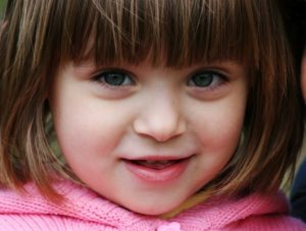

Testimonials of grateful parents
Юля
Большое спасибо логопеду Марине, благодаря которой мои дети (сын 6 лет и дочь 4 года) могут правильно произносить все звуки. Хочу отметить чуткое отношение к детям. Уроки насыщеные и интересны ребенку, в игровой форме . Мои дети всегда с удовольствием приходили на занятия. За короткий срок прогресс был налицо. Марина отличный специалист и педагог. Просто приятная, интеллигентная женщина. Мы очень рады что обратились к ней. Приходите и занимаетесь с удовольствием! Юлия
Diana
Our 4 year old daughter’s speech was extremely difficult to understand. Sometimes even we didn’t understand what she was trying to say. We got lucky that we turned to nobody else but Marina! During the first lesson with our daughter I noticed how Marina pays close attention to every detail. She was excited to teach our daughter and do everything to help her. Although Diana is a really shy girl that doesn’t open up to strangers easily, she liked Marina right away! After second lesson she said “Marina I love you”. We went to Marina for half a year. Her lessons were always very professionaly prepared and also contained something new. Now our daughter clearly speaks Russian and is not ready to learn English. Marina, big thank you to you for your help and effort! Anastasia
Danya
Big thank you to Marina for her kind attitude, hard work and love that she put into our son Danya. We are satisfied! Marianna

Yulya
We didn’t know what was going on with our child. Yulya wasn’t able to talk at all, although she already was 3. We were really worried and urgently were looking for a specialist that could help. After a consultation with Marina we knew what we had to do. Since then, along with doing the exercises at home, our Yulya had lessons with Marina twice a week. Right now our daughter is 4, she reads small poems, knows the correct pronunciation of sounds and has a large vocabulary for her age. Also, Yulya really enjoys learning from Marina. A big thank you to her for the hard work. Natasha and Dima

Dasha
We had a special case. Three languages are spoken in the family- Russian, English and Spanish. Due to that, our girl’s speech development was delayed. Our friends recommended Marina. We began her program. We liked the way she treated our daughter. Also, Marina concentrated on all components of the language. Thanks to that, slowly, our daughter began speaking in all three languages! We visit Marina’s office three times a week after kindergarten. Sometimes it’s tough but Marina makes the lessons so fun that Dasha actually looks forward to them. We are hoping to continue going to Marina up until elementary school. We want to make sure she doesn’t forget Russian. Sergey